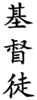

Our Emphasis is on the Practical
|
Our school is in Lakewood, Colorado, located at the back of the United Casting Company on the northwest corner of
South Kipling Parkway and West Kentucky Drive.
Our emphasis is on practical, no-nonsense self-defense. We are a small
school (accepting adult students only), preferring quality over quantity — both in whom we teach and in
what is taught. (Our Statement of Purpose provides insight into
our methods, standards, and expectations.) Classes are Monday and Wednesday
evenings, and Saturday morning, with private instruction available by appointment.
|
|
|

Je du-too, is not the name of our art. We neither study nor teach
Je du-anything (although we do practice a lot of Mexican judo). Je du-too
is just the name of our school, the Je du-too School of Martial Arts. Neither is
Orlando Kuntao the name of our art. It is simply our domain name and while it best
describes our analytical, systematic, and pragmatic approach to martial arts study and training, it is not
some new art. Our focus, methods, and expression may be our own, but the arts we teach we received
from others, and it is they who deserve the credit.
|
|
|||
|
Empty-hand instruction consists primarily of Chinese and Indonesian boxing (Chinese kuntao and the
Dutch-Indonesian method of pukulan pentjak silat) combined with elements of kung-fu, Chinese kenpo, and
Filipino martial arts. Each art (listed below) uniquely contributes to the system we study and teach.
|
|||
|
|
The Chinese kuntao we teach is an aggressive, combat-oriented system of Chinese
fighting arts that was practiced in Indonesia before and during WW-II. It is an art that defends by viciously
attacking the attacker, destroying his weapons on the way in, thereby destroying
his ability to wage war. In addition to the art's combat principles and methods of execution, we teach and study
forms
from both kuntao and kuntao-silat as received from both
Willem de Thouars and
George Morin (one of de Thouars' senior students).
|
|
|
|
This cunning art uses speed, stealth, finesse, and highly sophisticated technique to neutralize the
opponent. We practice the Eurasian, Dutch-Indonesian method of pukulan pentjak silat (not to be
confused with either the magical/metaphysical variety practiced by some or with the contemporary
sporting aspect, Olahraga). Most of the fighting is conducted from a standing position,
completely devoid of magic or mysticism, and with self-defense as its sole purpose.
Position is the operative word in silat, for its effectiveness manifests itself in an almost uncanny
ability to take an attacker down from practically any position. In addition to the art's combat
principles, we also teach and study one pentjak silat
jurus 2
and two kuntao-silat hybrids. It is the combination of kuntao and Dutch-Indonesian pukulan pentjak
silat (kuntao-silat) that forms the core of our training curriculum.
|
|
|
This is kuntao's classical Chinese root, and one that is more artistic. One of my first arts (received from
Al Dacascos), classical kung-fu brings a special beauty to the arts we teach. Although you will find no
"classical" kung-fu forms in our curriculum, the art's principles and training drills (as taught by and received from
Dacascos), still significantly influence our training and instruction (our
strong side forward emphasis is just one example of that influence).
Stimulating our artistic side, kung-fu is a perfect match for the combat efficiency of kuntao (efficiency that appeals
so strongly to our analytical side). Both sides work together symbiotically to speed development of the desired
martial skills.
|
||
|
Chinese kenpo was studied twice in our training. First, just after three years of
intense training in excellent Chinese kung-fu. Second, a few years before we were invited by Willem de Thouars to
study his kuntao-silat. Chinese kenpo effectively combines the fluidity and speed found in many Chinese systems
with the linear power of traditional Japanese striking arts. As such, it provides excellent
comparison/contrast examples for learning and understanding kuntao and silat, and although Chinese kenpo is one of our
martial roots, our students are NOT taught kenpo first — never have been. On the contrary, they are taught
kuntao-silat from day one. Included in the curriculum is one excellent empty-hand Chinese kenpo
form. (For the record: Our kenpo form, as well as our kenpo roots, come from none
of the mainstream kenpo lines — as effective as those systems are.)
|
||
| Filipino training methods strongly influence our empty-hand skills and they are also the primary source of our weapons training. Weapons instruction (primarily knife and baton 3) draws heavily from serrada escrima and, like kuntao, focuses on destroying an opponent's ability to fight by attacking his limbs first. We also incorporate the Filipino method of two-man flow drills into our curriculum because such training helps us quickly internalize principles and personal weapons practiced in our primary arts, Chinese kuntao and Dutch-Indonesian pukulan pentjak silat. | ||
|
Footnotes:
|
||
Our emphasis is on the practical.
|
©Copyright Bob Orlando, 1999-2016 All rights reserved. |
http://www.OrlandoKuntao.com
E-mail: Ron@OrlandoKuntao.com |
Last update:
Aug. 6, 2016 by Bob Orlando |